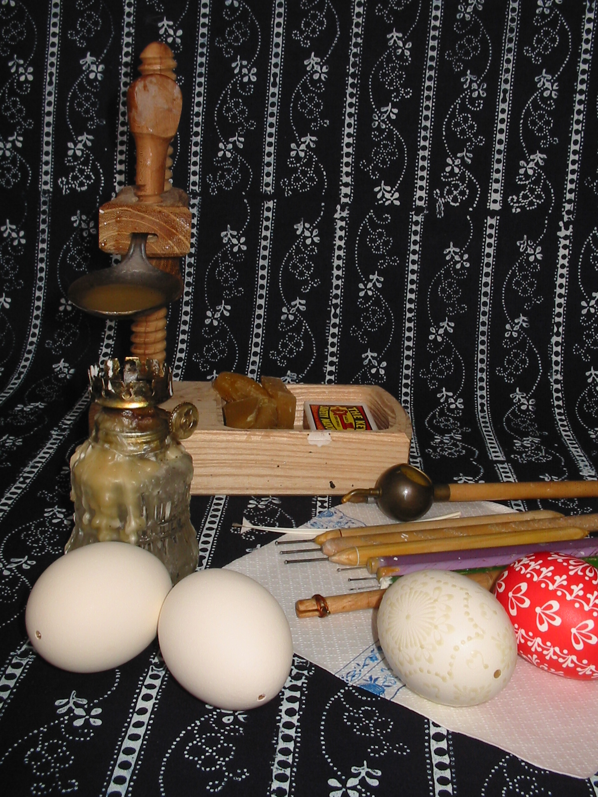

Základním nástrojem je špendlíková hlavička, kterou získáme prvek tečka a kapička. Kotejšem, razítkem z pera, získáme většinou trojúhelník. Pro delší čáry se využívá chanting. Samozřejmě lze využít i štětec.

Zpět na první stránku